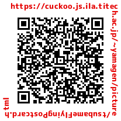

Paper Puppet Postcard: A Flying Swallow / Hilo Yamamoto
Last change: 2021/12/05 20:44:27.

Paper Puppet Postcards:




How to make it:
Prepare a 20cm long aluminum wire and a piece of chopsticks (Bamboo one would be better)
Download "A flying swallow" PDF from [HERE]
 Print out the pdf in postcard size.
Alternatively, since it is a postcard size, you can write a message and mail it to your friends.
Cut out the parts: A-1, A-2, B-1, and A-2, and glue B-1 on A-1, and B-2 on A-1.
Print out the pdf in postcard size.
Alternatively, since it is a postcard size, you can write a message and mail it to your friends.
Cut out the parts: A-1, A-2, B-1, and A-2, and glue B-1 on A-1, and B-2 on A-1.

 Make holes at the blue dots with a needle. Glue the yellow tabs on each other. Take 20cm of wire.
Make holes at the blue dots with a needle. Glue the yellow tabs on each other. Take 20cm of wire.

 Pass the tip of the wire through the hole, and then bend the tip into the shape shown in the figure.
Pass the tip of the wire through the hole, and then bend the tip into the shape shown in the figure.

 Cut out the parts: C
Cut out the parts: C
 Fold it as shown in the picture, glue the yellow tabs and stick them together.
Fold it as shown in the picture, glue the yellow tabs and stick them together.


 Wrap double-sided tape around the disposable chopstick, pass between the blue tabs.
Fix the tip of the chopstick behind the head. Wrap the blue tab around the chopstick and tape it.
Wrap double-sided tape around the disposable chopstick, pass between the blue tabs.
Fix the tip of the chopstick behind the head. Wrap the blue tab around the chopstick and tape it.


 Attach double-sided tape to the yellow tabs on the body, check how the wings open, and then glue them together.
Attach double-sided tape to the yellow tabs on the body, check how the wings open, and then glue them together.


 After bending the wire at a right angle, wrap it around the chopstick.
After bending the wire at a right angle, wrap it around the chopstick.

 Cut out the parts: D-1 and D-2 and glue D-1 and D-2 on the chopstick.
Cut out the parts: D-1 and D-2 and glue D-1 and D-2 on the chopstick.


 It's done.
It's done.

 There are international students who are overseas and have not yet come to Japan.
They are taking classes at Zoom every day, but I would like them to come to Japan early.
There are international students who are overseas and have not yet come to Japan.
They are taking classes at Zoom every day, but I would like them to come to Japan early.
Resources